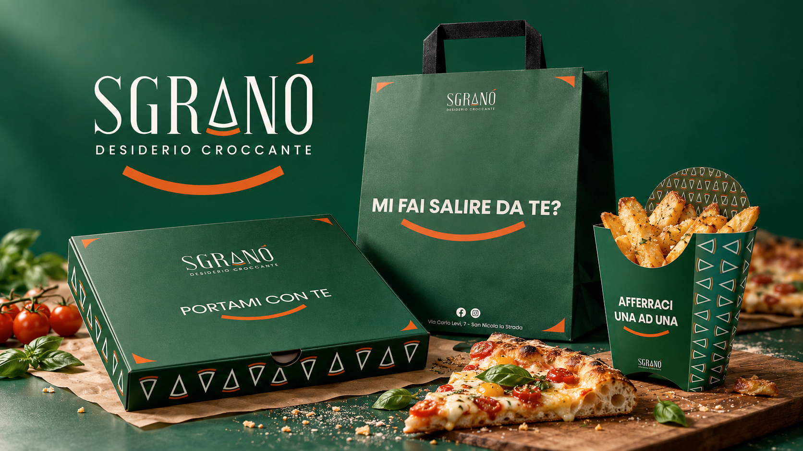
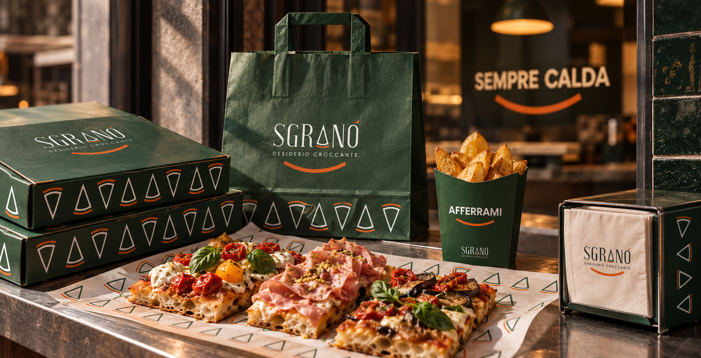
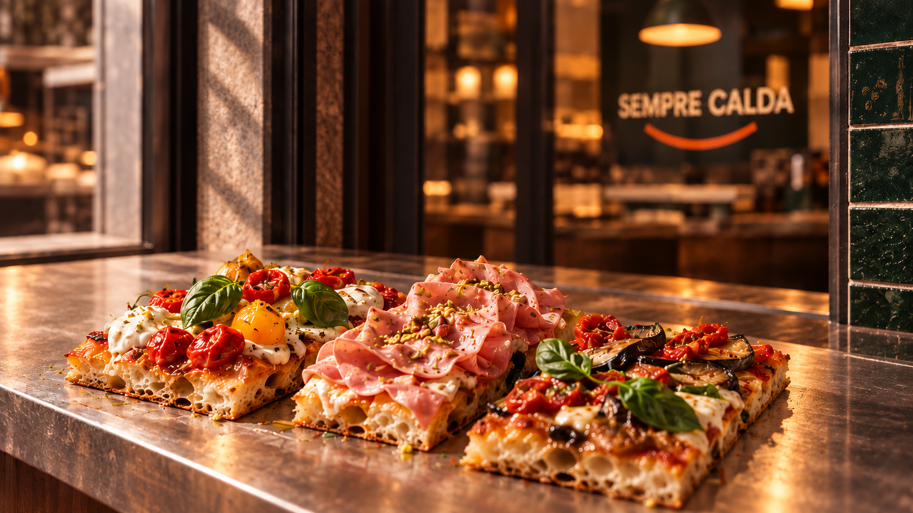
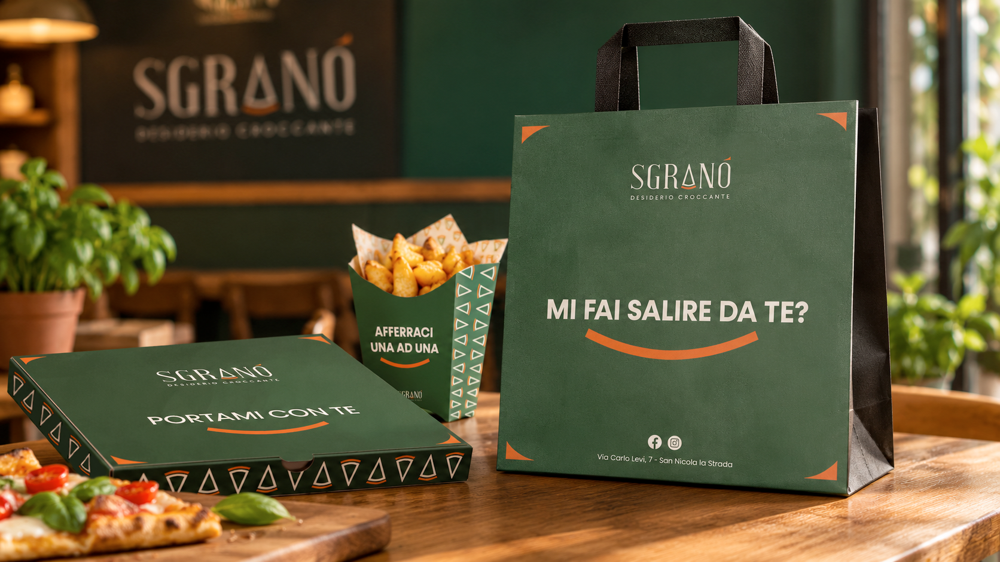
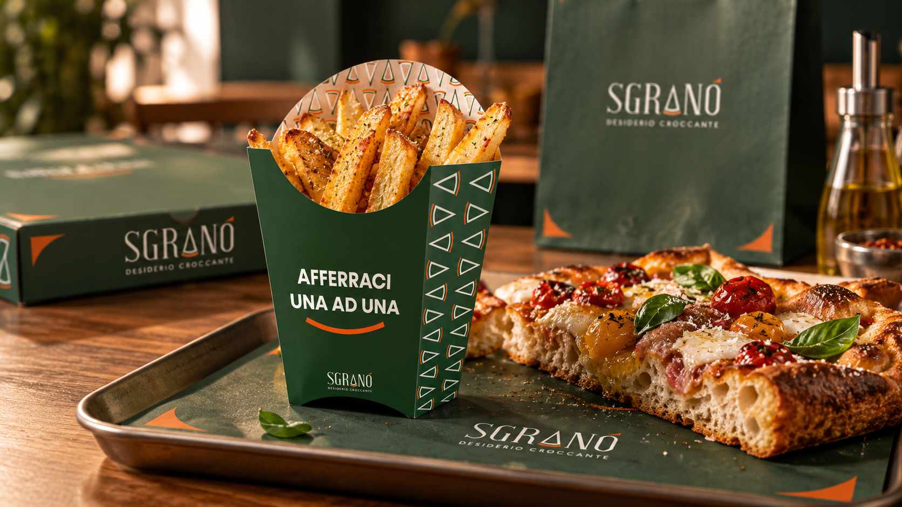
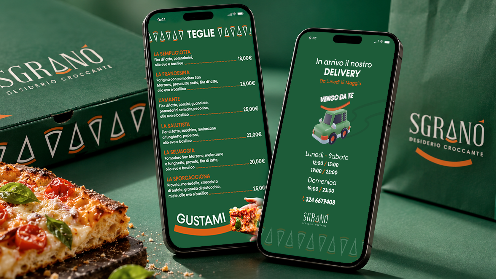

Branding / 04
Sgranò
Desiderio Croccante
A crisp identity with a playful voice, turning a craving for pizza into a recognisable brand.

Brief
Sgranò is a pizzeria in San Nicola la Strada, specialising in crispy tray pizza and pizza nel ruoto. Its carefully designed, contemporary space also includes a large children’s play area. The identity needed to express the appeal of the food and the welcoming character of the place.
Brand concept
“Desiderio Croccante” connects appetite with the texture that defines the product. I developed this idea through a warm visual language and short, ironic messages that make the food speak directly to the customer.
Creative direction
Deep green gives the identity a rich backdrop, while orange adds warmth and emphasis. Slender lettering, a curved graphic accent and a repeated triangular motif connect the logo to a flexible system for print, packaging and digital communication.
- Year
- 2023
- My role
- Brand design
- Tools
- Adobe Creative Cloud · Blender · Figma
- Deliverables
- Visual identity, packaging, promotional materials
Visual identity
The logo, palette and graphic details create a consistent presence around the product. Repeated across boxes, bags and table materials, the triangular motif brings rhythm to the layouts without competing with the food.

Tone of voice
Short phrases give Sgranò a direct, playful personality. “Sempre calda” and “Portami con te” turn everyday moments into a conversation: the words refer to the food, while their placement gives each message its own context.

Packaging that speaks
The takeaway system carries both the food and the brand’s personality. Each format has its own message, while green surfaces, orange accents and patterned edges keep bags, pizza boxes and fry containers visually connected.


Digital communication
The same visual language extends to the menu and delivery communication. Colour, typography and the recurring pattern connect the screens to the printed materials, keeping the brand recognisable as customers browse the offer.

Outcome
The identity brings together appetite, visual consistency and humour. These mockups show how Sgranò’s personality can remain recognisable across the storefront, packaging and digital materials, with the pizza always at the centre of the story.
See also

SanTarallo